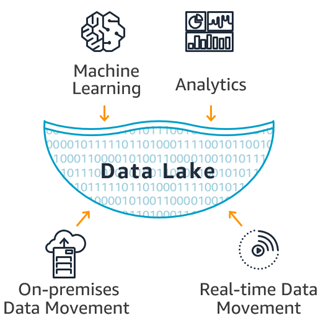
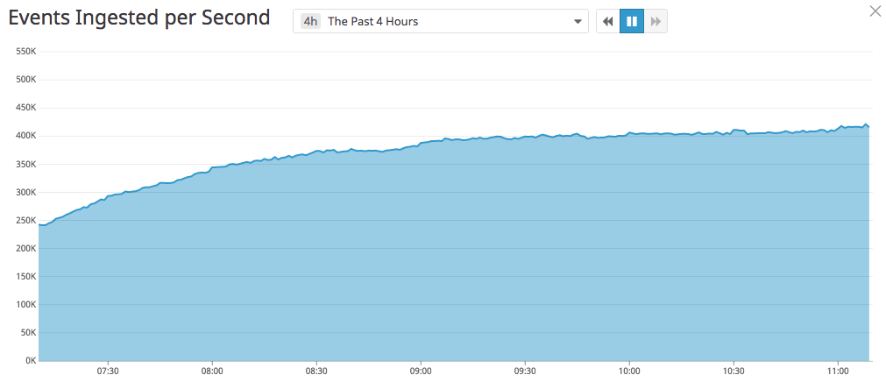
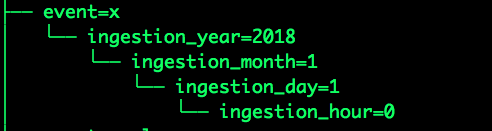
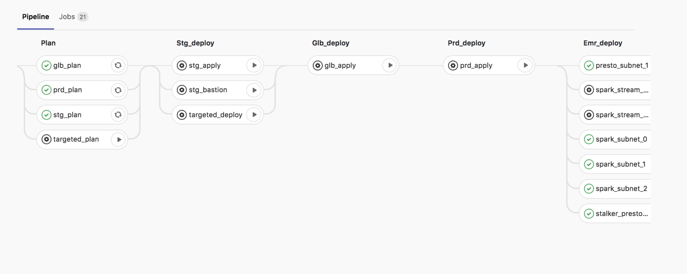
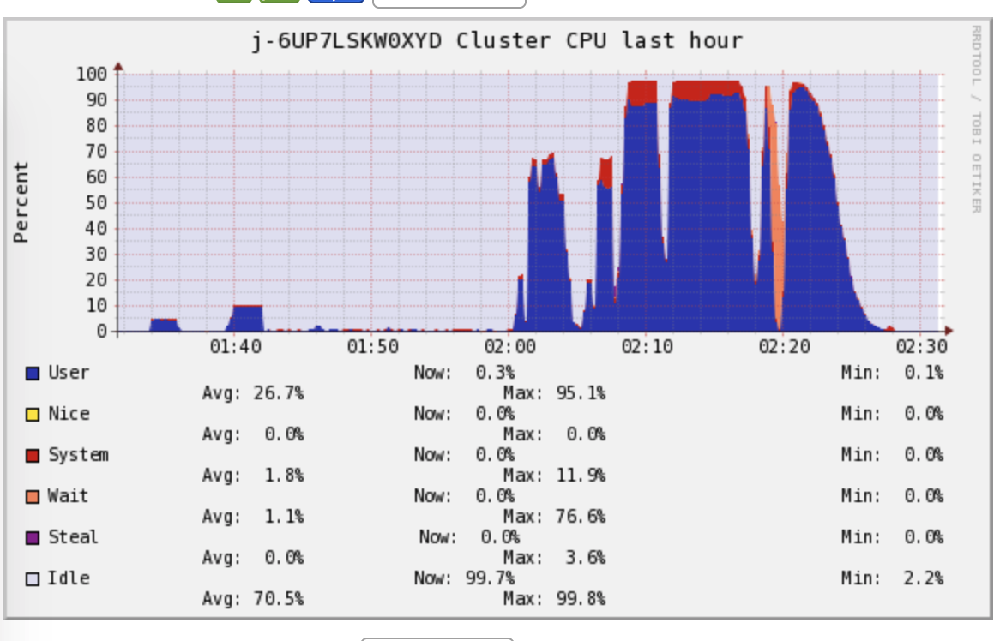
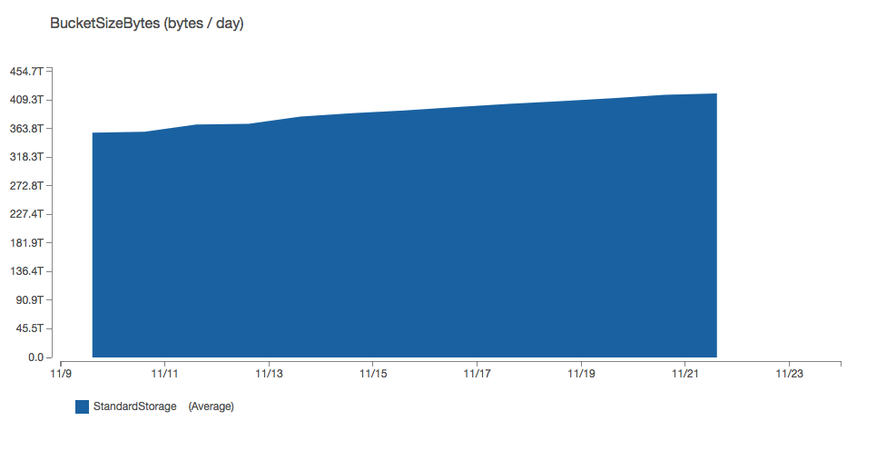

A Lean and Scalable Data Pipeline To Capture Large Scale Events and Support Experimentation Platform
Introduction
Fast product development and rapid innovation require running many controlled online experiments on large user groups. This is challenging on multiple fronts, including cultural, organisational, engineering, and trustworthiness.
To address these challenges we need a holistic view of all our systems and their interactions:
- For a holistic view, don’t just track systems closely related to your experiments. This mitigates the risk of a positive outcome on specific systems translating into a negative global outcome.
- When developing new products, we need to know how events interact
For example, imagine we plan to implement a new feature to increase user engagement. We can design a simple A/B test that measures the user engagement with our product for two randomized groups of users. Let’s assume we ran the experiment and the test shows the engagement significantly increased for the treatment group. Is it safe to roll out this feature? Not necessarily, since our experiment only monitored one metric without considering others.
Let’s assume an application where click through rateis a target metric we want to keep optimalsince its value impacts our bottom line. Suppose we add a new feature and want to make sure our metric improves. We experiment and find it does improve our target metric. However our DevOps team tells us the server load metrics degraded. Therefore, our next question is “arethe server load metrics different between treatment and control?”.
Obviously, it gets complicated when you have many experiments and metrics. Manually keeping track of all the metrics and interactions is neither practical nor scalable. Therefore, we need a system that lets us build metrics, measure and track interactions, and also allows us to develop features enabling global optimization across our various product verticals.
To build such a system,we must capture, ingest, and process data, and then servethe insights as part of our experiment results. In 2017, we started building the various layers to support this goal. In this post, we describe our progress, and lessons learned in building a system that ingests and processes petabytes of data for analytics.
Data lakes and data pipelines
The data pipeline concept is closely related to data lakes. Just like a lake that rivers and smaller streams flow into, a data lake is where various data streams and sources are collected, stored and utilised. Typically, a data pipeline destination is a data lake.

Just as people use lakes for different purposes, Product Analytics and Data Scientists use data lakesfor many purposes, ranging from data mining to monitoring and alerting.
In contrast, a data pipeline is one way data is sourced, cleansed,and transformed before being added to the data lake. Moving data from asource to a destination can includesteps such as copying the data, and joining or augmenting it with other data sources. A data pipeline is the sum of all the actions taken from the data source to its destination.It ensures the actions happen automatically and in a reliable way.
Let’s consider two types of data pipelines: batch and stream. When you ingest data in batches, data is imported at regularly scheduled intervals. On the other hand, real-time ingestion or streaming is necessary when information is very time-sensitive.
This post focuses on the lessons we learned while building our batch data pipeline.
Why we built our own data pipeline
At the beginning of 2018, we designed the first part of our Mobile event Collector and Dispenser system (McD) thatlets our mobile and backend applicationssend data to a data pipeline. We started with a small number of events (few thousand per second). But with Grab’s rapid growth, scaling our data pipeline was challenging. At the time of writing, the McD service ingests approximately400,000 events per second. 
Designing, implementing, and scaling our pipeline in less than a year was not easy. Also, we are a small and lean team. This affected the technologies we could use and how we developed and deployed the various components.
Most importantly, we needed to keep things operationally simple and reliable. For instance, we decided to seek frameworks that support some form of SQL and a high-level language, since SQL is popular among Grabbers.
Design requirements
To kick off the process, we first interviewed the project’s potential stakeholders, including both product owners and engineers.
The two questions we asked were:
- Who will access the data?
- What were their expectations in terms of lag between data being captured at source and the data being available through the serving layer?
This second question is often missed when building data warehouses and ETL jobs. But for us, its answers were the cornerstone for future decisions.
From the answers, we realized we needed to support access patterns from different users:
- Data analysts performing analytical tasks such as querying the data for counts, averages within specific date ranges (one day, one week), and specific granularity (i.e. one hour). As we need to provide new data daily, this use case has an SLA of one day.
- Data scientists doing Exploratory Data Analysis, building a dataset for training machine learning models, running optimization algorithms, and inferring simulation parameters.
- Quality assurance and support engineers searching for specific events who require very fine granular level access. Their SLA is at most a few hours.
- Advanced monitoring and anomalies detection systems requiring a time series at different granularity depending on the type of monitoring.
- Expert systems requiring both coarse and granular data while searching and aggregating across a dynamic set of variables.
For each use case we asked whether batch or streaming made more sense. We concluded a one hour lag was acceptable for most of the applications, at least for the initial rollout. For the data analysts, an SLA of a few hours was acceptable.
These initial conclusions gave us a lot of food for thought, particularly in regard to the data’s layout in the data lake and what storage format we planned to use.
Our next question was: how would the various applications and stakeholders access data?All Grab analysts and data scientists use SQL and our backend applications talk to databases with SQL. It was clear we should access data through an SQL interface.
Our final question was about democratizing access to our data. We knew we had core applications and users we wanted to support. But we also knew the collected data could be strategic to other stakeholders and future use cases. Since we are a small team, we would not be able to support thousands of concurrent ad-hoc queries. For this reason, we surface this data using the Grab’s general data lake which is able to serve approximately 3 million queries per month.
The Experimentation Platform (ExP) data pipeline
Following our initial information gathering sessions, we decided on these objectives:
- Develop a pipeline for batch data, making sure it is highly available.
- Allow analytical queries that aggregate on a wide range of attributes.
- Allow building time series by specific event types.
- Allow an SQL-supporting query engine.
- Democratize the data access.
Our batch data pipeline’s high-level architecture is pretty simple. It follows the pattern of most data warehouse ETL jobs except that we do not need to export data. In our data pipeline we perform two operations, Load and Transform, and write the result data into our data lake.
At a high level, we can think of the data pipeline as performing three key operations:
- Load the data the ingestion layer has written on Amazon S3.
- Transform the data by ordering and partitioning according to patterns discussed below.
- Write data to Amazon S3 and metadata to a metastore.
We use standard technologies: Apache Spark for compute, Apache Hive for metastore, and Apache Airflow as the workflow engine. We run Apache Spark on top of AWS Elastic MapReduce (EMR) with external AWS RDS and EC2 instances for Hive and Airflow.

Particular topics of interest here are:
- How we partition the data to enable the different access patterns discussed above.
- How we used EMR and Airflow to achieve resilience and high availability.
Let’s first look at what partitioning data means.
For simplicity, we can think of data in a simple tabular format, just like a spreadsheet. Each row is a record and each column is an attribute. The columns can have a different range of values.
We can organize data stored in the storage layer in hierarchical groups, called partitions, based on rows or columns. The serving layer can use this structure to filter data that needs to be served.For large-scale data, it is convenient to define partitions based on the attributes of one or more columns.
Within a partition, data can be sorted depending on other attributes. Most data processing frameworks, including Apache Spark, support various partitioning schemes and sorting data within a partition (see https://deepsense.ai/optimize-spark-with-distribute-by-and-cluster-by/). In our pipeline, we use these Spark features to minimize the data processed by the serving layer.
In our data, the time and event types are the key attributes. Every single event has the time that it was ingestedand its associated event type.
Our goal is to minimize the data the query engine needs to process and serve a specific query. Each query’s workload is the combination of the data that needs to be accessed and the complexity of the operation performed on the data. For analytical queries, common operations are data aggregation and transformations.
Most of our analytical workloads span across a small number of event types (between 2 to 10) and a time range from one hour to few months. Ourexpert systemand time series systemsworkloads focus on a single event type. In theseworkloads the time range can vary from a few hours to one day.A data scientist’s typical workloads require accessing multiple event types and specific time ranges. For these reasons, we partitioned data by event type and ingestion time.

This hierarchical structure’ key advantages are:
- When retrieving data for a specific event,we don’t need to scan other events or any index. Thesame applies for time ranges.
- We do not need to maintain separate indexes and can easily reprocess part of the data.
- Workloads across multiple events and/or time ranges can be easily distributed across multiple processing systems, which can process a specific sub-partition in parallel.
- It is easier to enforce an Access Control List (ACL)by using the storage layer ACL system torestrict access to specific events and a time range.
- We can reprocess a specific partition or a set of partitions without having to reprocess the full data.
For storing the actual data in each partition, we considered two common storage formats and chose Apache ORC. We compared Apache Parquet against ORC for our workloads. We found an increase in performance (time saved in retrieving the data and storage utilized) between 12.5% and 80% across different use cases when using ORC with Snappy compression vs equivalent data store in Parquet with Snappy compression.
Another key aspect was addressing the problem of High Availability of an AWS EMR. As of November 2018, AWS EMR does not support hot-standby and Spark multi-master deployment. We considered deploying Spark on top of Kubernetes but the initial deployment’s overhead as well as operating a Kubernetes cluster appeared more complex than our adopted solution. We do plan to revisit Spark on Kubernetes.
The alternative approach we used was AWS EMR, which leverages the distributed nature of the airflow workers. We run one or more totally independent clusters for each availability zone. On the cluster’s master node, we run the Apache Airflow worker,which pulls any new job from a queue. The Spark jobs are defined as Airflow tasks bundled into a DAG.
If a task fails, we automatically retry up to four times to overcome any transitory issues such as S3 API or KMS issues, availability of EC2 instances, or any other temporary issue with underlying resources.
Tasks are scheduled across different clusters and therefore different availability zones. If an availability zone fails, generally there is no impact on other tasks’ executions. If two zones fail, then generally the impact is just a delay in when the data is available for serving.
For deploymentsrequiringan upgrade of the EMR version or of internal libraries, we roll out the new version to a random availability zone. This lets us perform canary deployments of our core processing infrastructure. It also lets us rollback very quickly as the remaining availability zones suffice to execute the pipeline’s workload. To do this, we use terraform and our Gitlab CI.

Packaging and deployment of jobs
We believe our code’s architecture is also of interest. We use Apache Spark and write our Spark jobs in Python. However, to avoid performance penalties, we avoidprocessing the data within the Python VM. We do most of the processing using Spark SQL and the PySpark APIs. This lets us have comparable performance with the same job written in Scala or Java while using a programming language most of us are familiar with.
A key aspect we addressed from the beginning was the package of the Spark jobs.
The Spark documentation lacks information on how you should package your Python application. This resulted in misleading assumptionson how to write complex applications in Python. Often, Pyspark jobs are written using a single file where all the logic and data models are defined. Another common approach is to package the libraries and install them as part of the EMR bootstrap process where custom libraries can be installed on each node.
We took a slightly different approach. We package our application using this pattern:
- lib.zip, a zip file containing all the internal modules and the defined data models. These files are shared across different jobs.
- Each Spark job has a Python file which defines the job’s core logic and submits the job.
- Any configuration file is placed in S3 or in HDFS and loaded at runtime by the job.
We deploy all the files on S3 using our deployment pipeline (Gitlab CI). This pattern gave us greater re-usability of our code across different Spark jobs. We can also deploy new job versions without re-deploying the full set of EMR clusters.
Lessons learned
Throughout our data pipeline’s development, we learned important lessons that improvedour original design. We also better understand what we can improve in the future.
The first lesson relates to the size of the master node and task node in EMR.
Our initial clusters had this setup:
- Master node was using either anm4.xlarge or m5.xlarge instance.
- One core node was usingan m4.2xlarge or m5.2xlarge instance.
- A dynamic number of task nodes were using m4.2xlarge or m5.2xlarge instances.
The number of task nodes scaled up depending on the number of containers pending. They could gofrom 5 initial task nodes to 200 at a pace of 25 nodes added every 5 minutes, done automatically using our scaling policy. As we reached 100 nodes running on a single cluster, we noticed more task nodes failing during processing due to network timeout issues. This impacted our pipeline’s reliability since a Spark task failing more than 4 times aborted the full Spark job.
To understand why the failure was happening, we examined the resource manager logs. We closely monitored the cluster while running a sample job of similar scale.
To monitor the cluster, we used EMR’s default tools (Ganglia) (as shown below) and custom monitoring tools for CPU, memory, and network on top of Datadog. We noticed the overall cluster was heavily used and sometimes the master node even failed to load the metrics.
 EMR cluster CPU monitoring with Ganglia
Initially, we thought this would not have had any impact on the Spark job as the EMR master node in our settings is not the Spark driver node. Our reasoning was:
- We deployed our applications in cluster mode and therefore the Spark job’s driver would have been one of the task nodes.
- If the master was busy running the other services, such as the Spark history server and the Resource manager, it should have had no impact.
Our reasoning was incorrect because, despite correctly assuming the Spark driver was a task node,we did not consider that Spark on EMR relies on YARN for all its resource allocation.
By looking more carefully at the logs on the Spark task, we noticed the tasks nodes were failing to communicate their status to the master node and would then shut themselves down. This was happening at the same time as high CPU and high I/O on the master node.
We rethought our deployment configuration. We used bigger master instances (m5.2xlarge) as well as much bigger task instances in lower numbers (r4.2xlarge) - up to 100 of them.
After a few weeks of initial deployment, we noticed our EMR clusters’ core nodes failed quite regularly. This prevented the Spark job from being submitted, and would often require a full cluster redeploymentto get the system healthy. The error in the job indicated an HDFS issue (see error log below). In our case, HDFS is only used to store the job’s metadata, such as the libraries, the configurations, and the main scripts. YARN also uses HDFS to store the logs.
We monitored the core nodes more closely and tried to replicate the issue by running an equal number of Spark jobs to the total number of jobs processed by failed clusters. In our test,we monitored the core node directly, meaning we connected tothe node and monitored it with tools such as iostat and iotop.
We noticed that after a while the Spark jobs’ logs were using a considerable amount of the HDFS resources. We checked the defaults configuration in EMR for ‘spark-defaults.confs’and tweaked the original configuration with:
{
“Classification”: “spark-defaults”,
“Properties”:{ ”spark.history.fs.cleaner.enabled” : “true” ,
“spark.history.fs.cleaner.maxAge”: ”72h”,
“spark.history.fs.cleaner.interval” : “1h”
}
}
py4j.protocol.Py4JJavaError: An error occurred while calling o955.start.
: org.apache.hadoop.ipc.RemoteException(java.io.IOException): File /mnt1/yarn/usercache/hadoop/appcache/application\_1536570288257\_0010/container\_1536570288257\_0010\_01\_000001/tmp/temporary-2a637804-562e-47f2-8e76-bd3d83f79eae/metadata could only be replicated to 0 nodes instead of minReplication (=1). There are 1 datanode(s) running and 1 node(s) are excluded in this operation.
at org.apache.hadoop.hdfs.server.blockmanagement.BlockManager.chooseTarget4NewBlock(BlockManager.java:1735)
at org.apache.hadoop.hdfs.server.namenode.FSDirWriteFileOp.chooseTargetForNewBlock(FSDirWriteFileOp.java:265)
at org.apache.hadoop.hdfs.server.namenode.FSNamesystem.getAdditionalBlock(FSNamesystem.java:2561)
at org.apache.hadoop.hdfs.server.namenode.NameNodeRpcServer.addBlock(NameNodeRpcServer.java:829)
at org.apache.hadoop.hdfs.protocolPB.ClientNamenodeProtocolServerSideTranslatorPB.addBlock(ClientNamenodeProtocolServerSideTranslatorPB.java:510)
at org.apache.hadoop.hdfs.protocol.proto.ClientNamenodeProtocolProtos$ClientNamenodeProtocol$2.callBlockingMethod(ClientNamenodeProtocolProtos.java)
at org.apache.hadoop.ipc.ProtobufRpcEngine$Server$ProtoBufRpcInvoker.call(ProtobufRpcEngine.java:447)
at org.apache.hadoop.ipc.RPC$Server.call(RPC.java:989)
at org.apache.hadoop.ipc.Server$RpcCall.run(Server.java:847)
at org.apache.hadoop.ipc.Server$RpcCall.run(Server.java:790)
at java.security.AccessController.doPrivileged(Native Method)
at javax.security.auth.Subject.doAs(Subject.java:422)
at org.apache.hadoop.security.UserGroupInformation.doAs(UserGroupInformation.java:1836)
at org.apache.hadoop.ipc.Server$Handler.run(Server.java:2486)
HDFS failure on spark-submit
Conclusions
We have processed over 2.5 PB of data in the past 3 and a half months while minimizing the storage used on S3 (500 TB) as shown below. The storage saving is related to both ORC and our partition scheme. After this initial batch data pipeline, our focus has shifted to the streaming data pipeline and serving layer. We plan to improve this setup, especially as new Spark releases improve Kubernetes and Apache Spark support.
